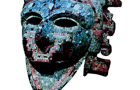

Lezione 11  Conquista delle Americhe
Conquista delle Americhe

Nel 1519 i conquistadores guidati da Hernan Cortés arrivarono in Messico, dove si trovava il fiorente Impero azteco guidato dal sovrano Moctezuma.
La conquista spagnola dell’Impero fu rapida nonostante la forte differenza di numeri in campo. Cortés arrivò con undici navi, un centinaio di marinai e circa cinquecento soldati. L’Impero messicano aveva all’incirca undici milioni di abitanti.
La superiorità militare degli europei era però schiacciante: gli spagnoli avevano cavalli – che in America erano sconosciuti –, armi da fuoco e pesanti armature. Inoltre giocò a favore degli spagnoli una credenza azteca, secondo la quale la fine dell’Impero era vicina, poiché un dio, il serpente piumato chiamato Quetzalcóatl, sarebbe giunto da Oriente, e quindi dal mare, per distruggere Montezuma, il sovrano azteco, e il suo regno. Quando Cortés arrivò in Messico fu identificato con il dio: gli aztechi accolsero il condottiero e i suoi uomini con grande timore e con un atteggiamento fatalista. Spaventati, combatterono con poca tenacia e non seppero opporsi alla forza e alla violenza spagnole.
Importante nella storia della conquista del Messico fu la figura di una giovane donna, chiamata Malinche, nota nelle cronache del tempo come donna Marina. Fu venduta a Cortés come schiava insieme ad altre venti ragazze, tre giorni dopo il suo sbarco sulle coste messicane.
Marina conosceva la lingua degli aztechi, e parlava la lingua maya, che gli spagnoli capivano grazie a un interprete. Diventò l’interprete personale di Cortés, tradusse tutti i suoi discorsi agli Aztechi, e viceversa: indispensabile mediatrice, rese possibile la comunicazione tra due mondi - quello spagnolo e quello azteco - che si scontravano.
«Passavano per le sue labbra i discorsi degli ambasciatori, le lagnanze degli oppressi, la sottomissione delle città, ogni genere di rapporti e notizie, non esisteva altro mezzo di comunicazione».
(storiografo messicano ottocentesco Manuel Orozco y Berra: Historia Antigua de la conquista de México, 1880, citato in Angelo Morino, La donna marina, Sellerio, Palermo, 1992).